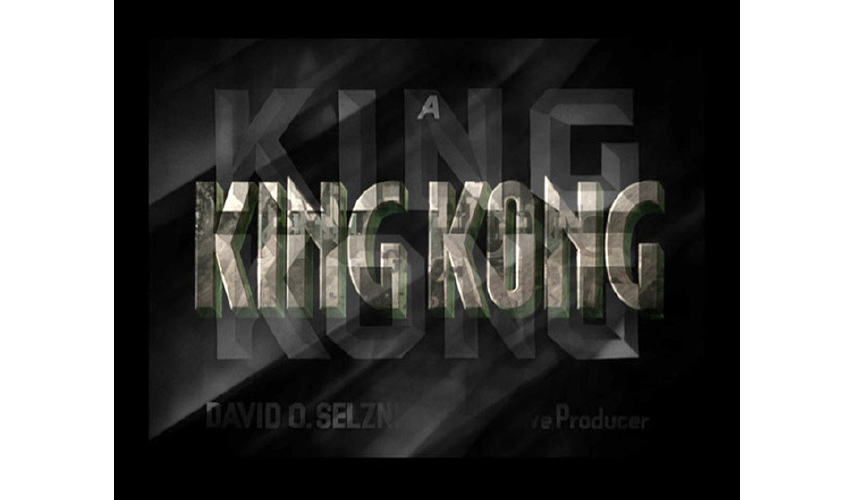

King Kong Addition layers three versions of King Kong movies to play simultaneously: KING KONG (2005) “Peter Jackson’s King Kong” directed by Peter Jackson, KING KONG (1976) “King Kong: The Legend Reborn” directed by John Guillermin, and KING KONG (1933) “King Kong, the eighth wonder of the world” directed by Merian C. Cooper and Ernest B. Schoedsack. This process creates darkened and surreal images in which an excess of information renders the images almost unreadable, demonstrating Adorno's statement that the repetition of a work of art alters its constitution. The viewer refuses to stop believing in King Kong regardless: this giant gorilla is an archetypal image, reborn every 15 years. To the inhabitants of Skull Island, King Kong is a god.... What does he represent to the viewer?
